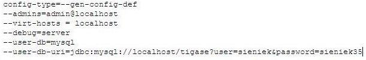
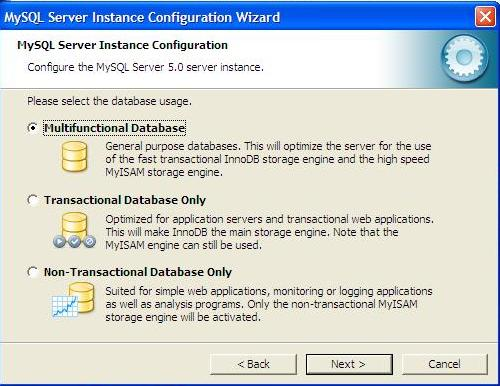
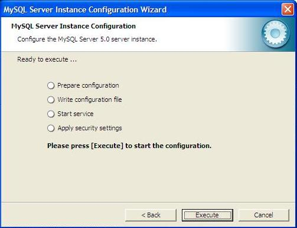

Table of Contents
Artur Hefczyc <artur.hefczyc@tigase.net> v2.0, June 2014: Reformatted for AsciiDoc. :toc: :numbered: :website: http://tigase.net :Date: 2010-04-06 21:16
Tigase server installation The server installation should be started with downloading the Tigase server from our download area. This guide describes installation procedure for the branch 3.x of the server so please pick up the latest version of the Tigase 3.x.
The Windows binary package is an executable file containing installer. Run the file and the server will be installed and icons will be added to your Windows start menu. Locate the Tigase group in your menu and execute: "Install Tigase service" which will install the Tigase server as the system service and it will be automatically started whenever your system starts.
If you are going to use the Tigase server with MySQL database have a look now in the directory where the Tigase server is installed. There is a directory etc/. Have a look inside and find file called init.properties. Open the file with a text editor and make sure you added there 2 following lines:
--user-db=mysql --user-db-uri=jdbc:mysql://localhost/tigasedb?user=tigase_user&password=mypass
The content of the file should look like the example screenshot below:

The section describes installation and configuration of the MySQL database to work with Tigase server.
Download the binary package from MySQL download area at mysql.com. Make sure you select executable proper for your operating system.
Run the installation program and follow default installation steps. When the installation is complete find the MySQL elements in the Windows Start menu and run the MySQL Configuration Wizard. Follow the wizard and make sure to check settings with screenshots in guide below.
In Welcome window just press 'Next'.(pic.1)

In the next window select option: 'Detailed Configuration' and press 'Next' (pic. 2)

On the next screen select option: 'Server Machine' and press 'Next' (pic. 3)

On the forth windows leave the default" 'Multifunctional Database' and press 'Next' (pic. 4)

On the step number five just press 'Next' using defaults. (pic. 5)

Again, on window 6 select the default - 'Decision Support (DSS)/OLAP' and press 'Next' (pic.6)

Make sure you switch OFF the 'Strict mode' and and press 'Next' (pic. 7)

On the character encoding page select: 'Manual Selected Default Character set/ Collation' and 'utf8', press 'Next' (pic.8)

On next window select 'Include Bin Directory in Windows PATH' and press 'Next' (pic.9)

On this window just enter the database super user password and make sure you remember it. When ready press 'Next' (pic. 10)

This is the last screen. Press 'Execute' to save the configuration parameters. (pic. 11)

When the configuration is saved you can repeat all the step and change settings at any time by running: START ⇒ Programs ⇒ MYSQL⇒ MYSQL serwer machine⇒ MySQL Server Instance Config Wizard
Now we have to set Tigase database up. From the Start menu run the MySQL console and enter all commands below finishing them with <ENTER>:
Create the database:
mysql>create database tigasedb;
Add database user:
mysql> GRANT ALL ON tigasedb.* TO tigase_user@'%' IDENTIFIED BY 'tigase_passwd'; mysql> GRANT ALL ON tigasedb.* TO tigase_user@'localhost' IDENTIFIED BY 'tigase_passwd'; mysql> GRANT ALL ON tigasedb.* TO tigase_user IDENTIFIED BY 'tigase_passwd'; mysql> FLUSH PRIVILEGES;
Load Tigase database schema:
mysql> use tigasedb; mysql> source c:/Program Files/Tigase/database/mysql-schema.sql;
There is a small configuration bug in the installation of the version 3.x. If you look in the run.bat file in the Tigase directory you have to replace string inital.propereties with init.properties.
You can now restart your machine and all services including the MySQL database and the Tigase server should be running. Alternatively if you don’t want to restart your computer you can start both services manually if you know how to do it.
When the system is up and running you can connect with any Jabber client (Psi for example) to your server to see if it is working.
Now, you can tweak the server configuration further. Use the ////<<initPropertiesGuide,////guide describing init.properties file for configuration details.